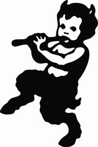

Trade Mark Journal No.2026/012 20 March 2026
UK00004349486 5 March 2026 (18,25,35)

- Class 18
- Sports bags; Bags for sports; Sport bags; All-purpose sports bags; Bags for sports clothing; Sports [Bags for -]; Athletics bags; Holdalls for sports clothing; Sports packs; Athletic bags; All purpose sports bags; General purpose sport trolley bags; Duffel bags for travel; Duffel bags; Leather shopping bags; Gym bags; Duffle bags; Shoe bags for travel; All-purpose athletic bags; Tote bags; Grocery tote bags; All purpose sport bags; Shoe bags; Mesh shopping bags; Mesh bags for shopping; Game bags; Carry-all bags; Canvas shopping bags; Bags for school; School bags; Toiletry bags; Bags (Game -) [hunting accessories]; Game bags [hunting accessories]; Leather bags; Bags; Crossbody bags; Hiking bags; Drawstring bags; Cross-body bags; Travel bags; Bags for travel; Two-wheeled shopping bags; Textile shopping bags; Sling bags; Souvenir bags.
- Class 25
- Clothing; Knitwear [clothing]; Jackets [clothing]; Ready-to-wear clothing; Woolen clothing; Furs [clothing]; Layettes [clothing]; Clothing layettes; Garments for protecting clothing; Linen clothing; Headbands [clothing]; Headbands for clothing; Gloves [clothing]; Gloves as clothing; Clothes; Jerseys [clothing]; Denims [clothing]; Shorts [clothing]; Cashmere clothing; Capes (clothing); Oilskins [clothing]; Gabardines [clothing]; Silk clothing; Leather clothing; Clothing of leather; Leather (Clothing of -); Parts of clothing, footwear and headgear; Collars [clothing]; Veils [clothing]; Knitted clothing; Windproof clothing; Hoods [clothing]; Corsets [clothing, foundation garments]; Embroidered clothing; Wristbands [clothing]; Belts [clothing]; Belts for clothing; Bandeaux [clothing]; Rainproof clothing; Waterproof clothing; Casual clothing; Visors [clothing]; Jackets being sports clothing; Jackets (Stuff -) [clothing]; Stuff jackets [clothing]; Bottoms [clothing]; Playsuits [clothing]; Clothing for leisure wear; Ready-made clothing; Latex clothing; Trunks being clothing; Woven clothing; Drawers [clothing]; Drawers as clothing; Infant clothing; Leisure clothing; Clothing for sports; Sports clothing; Ties [clothing]; Athletic clothing; Clothing for children; Muffs [clothing]; Bodies [clothing]; Clothing for babies; Tops [clothing]; Clothing for infants; Clothing for cycling; Weatherproof clothing; Fabric belts [clothing]; Water-resistant clothing; Pockets for clothing; Triathlon clothing; Handwarmers [clothing]; Clothing for skiing; Beach clothing; Cowls [clothing]; Chaps (clothing); Thermal clothing; Men's clothing; Fishing clothing; Braces for clothing; Mitts [clothing]; Dance clothing.
- Class 35
- Online retail services for downloadable virtual clothing; Online retail services in relation to downloadable virtual footwear; Online retail store services in relation to clothing; Online retail store services relating to clothing; Online retail services in relation to downloadable virtual clothing; Online retail services relating to handbags; Online retail services relating to clothing; Online marketing; Business management of wholesale and retail outlets; Online retail services relating to luggage; Online advertising; Advertising the goods and services of online vendors via a searchable online guide; Business management of retail outlets; Online advertising services; Retail store services in the field of clothing; Online ordering services; On-line advertising; Unmanned retail store services relating to food; Unmanned retail store services relating to drink; Rental of advertising space on-line; Compilation of online business directories; On-line advertising and marketing services; Business management of wholesale outlets; Retail services relating to jewelry; Retail services in relation to jewellery; Promotion, advertising and marketing of on-line websites; Online community management services; Online advertising on computer networks; Business information services provided online from a global computer network or the internet; Business information services provided online from a computer database or the internet; Providing online marketplaces for sellers of goods and or services; Providing searchable online advertising guides; Retail services connected with stationery; Retail services in relation to computer software; Retail services in relation to footwear; Provision of an online marketplace for buyers and sellers of goods and services; Retail services in relation to fashion accessories; Retail services in relation to coffee; Retail services in relation to bakery products; Retail services relating to bakery products; Retail services in relation to clothing.
CIRCUS Running Limited